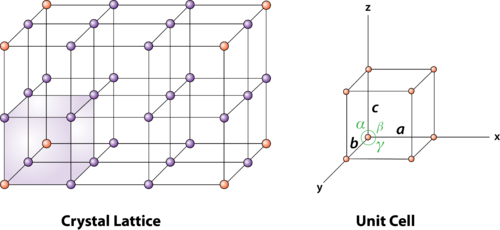
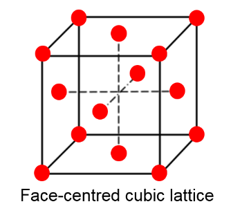
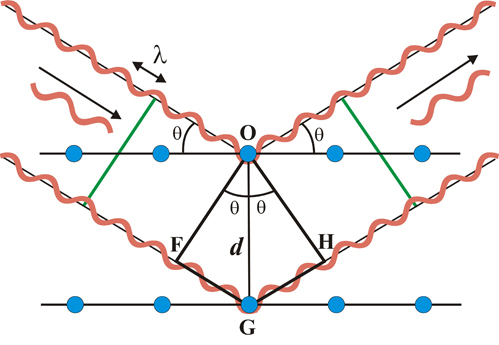
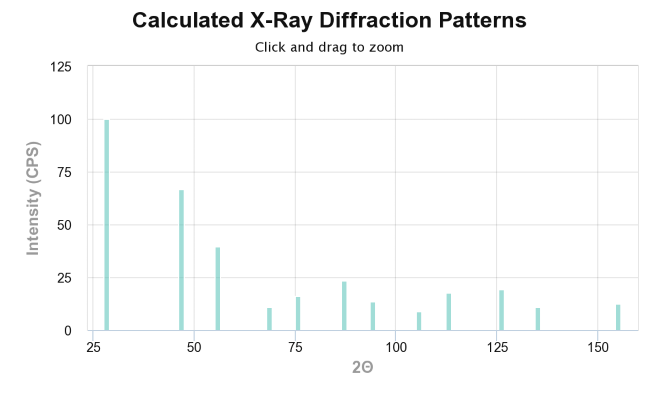
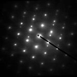
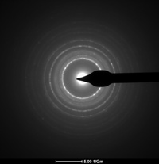
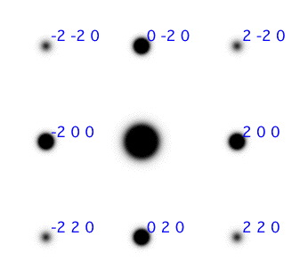
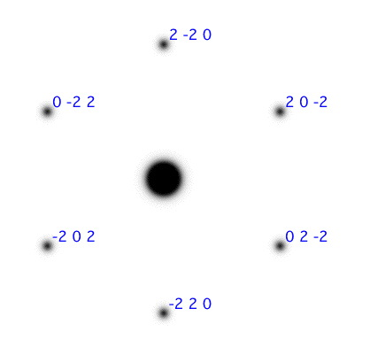

Materials science and Bragg’s law¶
Learning outcomes¶
Be able to discuss and relate the different components that make up Bragg’s diffraction law and how they impact an XRD-dataset.
Sketch how Bragg’s law can be derived from simple geometric features
Explain and recall simple terms related to the crystal structure of a material.
Introduction¶
In this “book” we will explore some central concepts of materials science and experimental methods that are commonly used. The key takeway from this will hopefully be how complex models and physical laws can be shown to be derivatives of simple mathermatic properites, specifilcly vector operations and gemometry. Hopefully you might remember some terms from materials science and how they are studied experimentaly.
Crystal structure¶
To begin with, lets take a look at two essential terms of materials science, namley the supercell and its corresponding unit cell. (Shown in figure 1)

Figure 1: An illustration of a typical unit cell of a periodic supercell
This representation of crystal structures treats atomic ordering as an infinite periodic arrays of discrete points, and is known as a Bravais lattice. In 3D, there are 14 induvidual classes, one of which is the “primitive cell”, shown above(right). Common for all unit cells is that they represent the smallest possible ordering to capture the perodicity of the larger supercell, and hence is made up of three angles \(\alpha, \beta, \gamma\), and three unit axes \(a, b, c\), poiting to various spheres called lattice points. In cubic unit cells, for instance a face centered cubic lattice (figure 2), a = b = c, and \(\alpha = \beta = \gamma = 90^\circ\). But this is not nescaccarly the case for other structures, such as a hexagonal or triclinic bravais lattices.
From figure 1 we can see that every lattice point can be described by the unit axes a, b, c. For instance the corner points in the bottom plane in the unit cell is located at:
, if \(\vec{r}\) is a vector pointing from origo (0,0,0) to the lattice point. In general we say that each lattice point in the supercell can be desribed by integers u, v, w and the unit axes a,b, c as \(\vec{r} = u\cdot \vec{a} + v\cdot \vec{b} + w\cdot \vec{c}\). This term lattice point can in theory represent an atom, but it can also represent a collection of atoms or a molecule. One feature to make note of is that beacouse of the symmetry of the supercell, every induvidual lattice point will only equal a fraction of said atom/molecule as the same point is shared between neigboring cells (See figure 1 and study the amount of cells that share one point). For example, a corner point in a bravais lattice is shared by eight cells, therefore a corner latice point is equal to 1/8 atom/molecule.
Look at figure 2, can you describe the points at the midway point in this cell in an eqvivalent manner to that above?
What is the volume of an FCC lattice in terms of a?
How many atoms/molecules does an FCC unit cell contain?

Figure 2: A very common crystal structure called an FCC lattice, this lattice is the prefereed arrangement of many materials, examples are NaCl, Dimond and Aluminum.
The planes of atom in a lattice is commonnly reffered to as crystal planes or hkl planes due to their particular notation {hkl}. For instance, in figure 2 we note that the top plane is denoted {001} as it cuts the c axis, and is parallel to the a, and b direction. A very important parameter related to the idea of crystal planes is the quantity plane distance (or seperation), and it represent the distance from a plane to the next identical plane. In this example, as the next plane of atoms equal to the top plane, is the bottom plane. The plane distance is equal to the size of the c-axis.
See Miller index and crystal planes for more information on crystal planes, and to see examples of the most common ones.
Superposition of waves¶
Before moving on, lets take a quik look at some important properties of wavetheory. Waves being a linear system, satisfy the superposition principle that in short expalins the form of an addidative wave from two initial waves that traverese thes same space. The resultant wave is formed by the the sum of the amplitudes from the intial waves. This can result in whats known as either constructive or destructive interference.
Try adjusting the variables in the animation bellow and see if you can achive complete destructive/constructive interference.
From this animation example, the main takeawy should be to remember that completly constructive interfernc eoccurs between two waves if their phase is an integer times \( \pi \) , and opposite completly destructive when \( \pi /2 \) phase shifted.
Bragg’s law¶
What is Bragg’s law?¶
Bragg’s law is a widley applied law in physics that is used to examine various crystallographic properties. Some of the various instrumentations and appliences of Bragg’s law will be discussed briefly at the end. However the instrumentation, the central working method is Bragg’s law. When two in-phase waves strike crystallographic planes seperated by a distance d, the Bragg condition states the relation between the incident and outgoing waves for the scattered rays to remain in-phase, thus creating constructive interference. The defintion is:
Thus, per defition the product of the waves incident angle \(\theta\) on the crystal planes and the distance between planes, must equal an integer times the incident wavelength \(\lambda\). But what does this mean?
Play around with the animation below and try and figure out how the value of d and \theta are related to eachother by studying the outgoing waves.
The animation below is an attempt to illustrate the geometric relation that makes up the Bragg conditon. You should try increasing/decreasing the incident angle by pressing the “W” and “S” keys, and also alter the plane seperation d through the slider. And it should be apperant when the condition yields constructive and destructive interference.
Bragg’s law from a geometric perspective.¶

Figure 3: A schematic view of the geometric values of the Bragg condition.
With the aid of figure 3, it can be shown that Bragg’s law come to fruition simply from considering the geometry. In figure 3, if we let the distance F-G-H denote the additional path of wave 2 compared to wave 1, its clear that this distance must exactly equal an integer times the wavelength for the two scattered waves to be in phase.
Find an expression for the distance G-H in terms of d and \(\theta\)
From the figure its apperant that G-H must equal G-F, therefore the total path F-G-H is equal to \( 2dsin\theta \), thus we have derived the Bragg condition \(2dsin\theta = n\lambda\).
Application¶
Why are we at all interested in Bragg’s law? Despite the fun trigonomety and vector excercies of course! Well, it just so happens that its an extremly important law of physics that is applied to study materials. The most common methods of examining materials today via spectroscopy is through methods such as X-ray diffraction or electron spectrocopy. And yes you guessed it, both of those rely heavily on Bragg diffraction. Lets first take a look at XRD and its use. In an XRD instrument, a sample, traditionally of powder, is being examined by monochromatic X-ray beams, most comonly \(\kappa \alpha_1\) of either Cu or Mg. The main concept of this instrumentation is the rotation of the sample, when rotating the sample, according to Bragg’s law certain crystal planes gives rise to constructive interference that is registred at the sensor, along the value of \(\theta\). From this, one can consruct and X-ray diffractogram of the sample as the one shown for Si bellow (Figure 4). From this one can relate the different values of \(\theta\) and intensites throguh bragg’s law to obtain information about the crystal structure of the sample. There is also possibilty to do qualitative and quantative analyisis of the sample from data in the diffractogram.

An XRD spectrum of Si.
 
A Selected Area Diffraction (SAD) image of a single crystal, and a TEM image of a polycrystalline sample
As mentioned above, in addition to X-ray diffraction, electron diffraction, specifly the Transmission Electron Microscopy (TEM) is a widley used instrument in materials science. In a TEM study, the sample must be very thin in order for the incomming beam of high-energy electrons to pass through the sample. Bellow is typpical TEM diffraction images of a single crystal and a polycrystaline specimen called SAD, or selected area diffraction images. The feature to take note of here is that a single crystal shows diffraction spots, while a polycrystal displays diffraction rings. In the single crystal, the spots each represent a crystal plane, while the rings each represent a set of planes with equal plane spacing.
Question: Why is the diffraction pattern different for single crystals and polycrystaline specimens?
Question: The zone axis is a term related to the direction the electronbeam traverse through the crystal, and all diffraction planes in the SAD are orthogonal to this direction. What is the zone axis for the SAD image in figure 5?
 
Figure 5: SAD patterns for two different zone axises